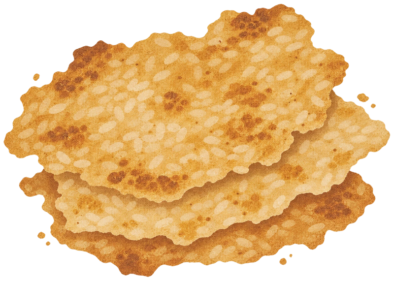
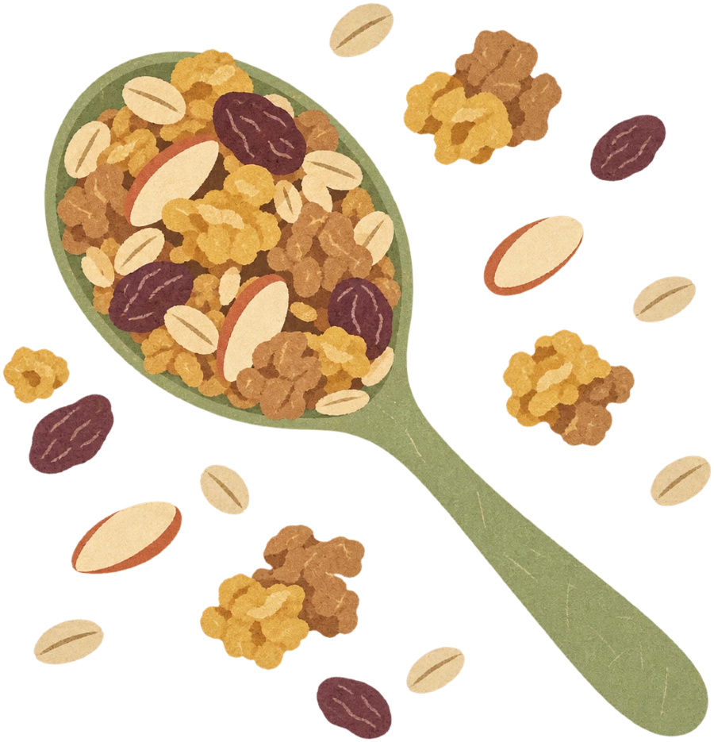

01
Find
한 알의 왜를 먼저 발견합니다.
한 알에서 시작하는 귀리처럼 저도 크고 거창한 문제보다 사람들이 반복해서 겪는 작은 불편과 어색함을 먼저 봅니다. 그냥 지나치기보다 “왜 그럴까?”를 생각하고, 문제의 시작점을 찾아 기획으로 이어갑니다.
가장 맛있는 부분을 골랐습니다.
저의 역량이 진하게 담긴 대표 프로젝트입니다.

서로 다른 경험이 모여 지금의 저를 만들었습니다.
학력부터 활동까지, 쌓아온 이력을 소개합니다.

그래놀라 속 토핑을 눌러 이야기를 확인해 보세요.
반죽하고 숙성시켜 하나의 빵을 구워내듯,
기획을 완성하는 저의 방식을 소개합니다.

Find
한 알에서 시작하는 귀리처럼 저도 크고 거창한 문제보다 사람들이 반복해서 겪는 작은 불편과 어색함을 먼저 봅니다. 그냥 지나치기보다 “왜 그럴까?”를 생각하고, 문제의 시작점을 찾아 기획으로 이어갑니다.
Mix
다양한 재료와 어우러지는 귀리처럼 저도 하나의 관점만 고집하기보다 기획 / 디자인 / 개발처럼 서로 다른 생각을 연결하며 일합니다. 각자의 시선이 따로 머무르지 않고, 하나의 더 나은 결과로 이어지도록 만드는 협업을 좋아합니다.
Fill
영양 가득 슈퍼푸드 귀리처럼 저 역시 여러 경험과 방법을 하나씩 쌓아두고, 문제에 따라 필요한 것을 골라 활용합니다. 많이 아는 것에서 끝나지 않고, 지금 필요한 것을 제대로 꺼내 쓰는 기획을 지향합니다.
기획할 때 곁들이는 툴 활용 능력을 소개합니다.
잔을 눌러 한 모금씩 마시면 활용 역량이 보여요.
마지막까지 보셨다면, 다음 이야기는 함께해요.
새로운 기회와 협업을 기다립니다.
Bap전체 프로젝트
든든하고 알차게 지었습니다.
다양한 경험과 아이디어로 완성한 모든 프로젝트를 만나보세요.